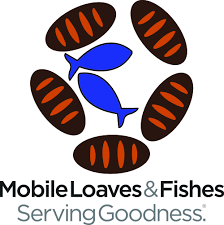
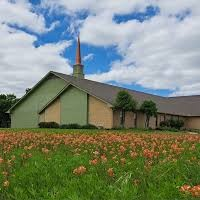

By spending time teaching and guiding others about the misfortune of others after learning myself, I felt like I was making the world a better place. When I was in their place making sandwiches, care packages, and cookies, I felt a warmth within my chest. I am happy to spread that to others! Click here to learn more about this organization.
While taking in donations from some, and giving to others, it really gives you the feeling that you can never tell when someone is struggling. Someone can seem like just an ordinary neighbor, but struggle to make ends meet. I feel happy when donations are dropped off, as it shows that people truly care about their neighbors. You can click here to learn more about this organization.

Attending sundays here and listening to the music lightens the soul. Even if you're new, everyone is very welcoming, and makes you feel like you are a part of the whole. If you are interested, you can check them out here. P.S. There are some very good bakers who go here!
While participating in a fundraiser for the American Heart Association, I realized how large heart disease and stroke issues are. I have had people close to me have strokes before, but I was too young to remember. I hope to raise more money for this organization! You can donate here anytime, or check them out and learn more about the risks of heart disease and strokes here.